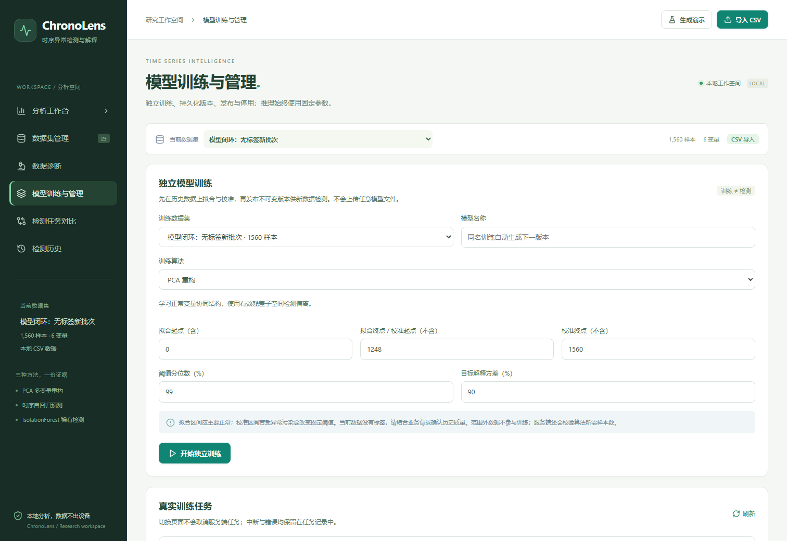
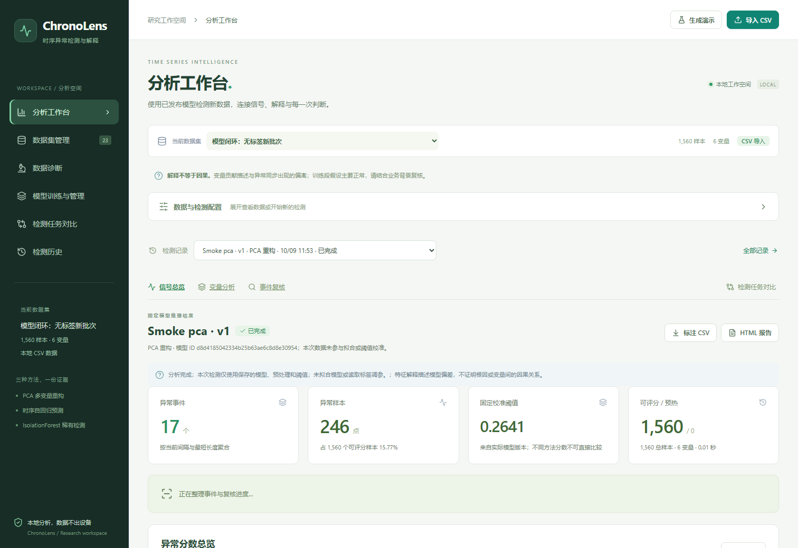

1. 启动与基本流程
Windows 双击项目根目录 start.bat，默认打开 http://127.0.0.1:8767。保持服务窗口开启，Ctrl+C 停止。首次运行需要 Python 3.10–3.12 和网络安装依赖；已构建前端存在时，正常使用不需要 Node.js 或 GPU。
start.bat --no-browser start.bat --port 8768
平台是本地批量分析工具，不含公网鉴权、自动告警或持续实时采集。不要未经安全改造暴露到互联网。
2. 独立训练与模型管理
- 导入训练 CSV，进入模型训练与管理页面，选择训练数据集、名称和算法。
- 指定拟合起点、拟合终点和校准终点。区间均为零基、左闭右开；起点必须小于拟合终点，拟合终点必须小于校准终点。
- 拟合段学习缺失值中位数、标准化参数和检测器；后续校准段仅用于确定异常分数阈值。未选入这些区间的数据不参与训练。
- 默认建议前 80% 拟合、后 20% 校准。PCA/孤立森林拟合至少 5 行；Ridge 至少窗口长度加 5 行；校准至少 5 行。实际业务应覆盖正常周期，不能只满足最低行数。
- 点击训练，查看服务端真实进度和错误。完成后检查输入特征、阈值和训练来源，再发布模型。
- 返回工作台，导入新数据并选择兼容的已发布模型。检测阶段不调用 fit，不重新学习填充值、标准化参数或阈值。
每次训练生成不可变版本。停用阻止新的检测，但不删除模型资产或历史结果。旧版现场拟合记录仍可查看、复核和导出，明确没有独立模型，不伪造版本关联。
合成演示：生成 2400 点数据后，使用拟合区间 [0,672)、校准区间 [672,840)，阈值分位数 99%。前 840 点没有注入异常。可以用同一合成数据演示操作，但这种演示不是独立测试效果证明。

本地脚本训练：同一个核心，不是另一套算法
.venv\Scripts\python.exe scripts\train_model.py 训练数据.csv --name 我的PCA模型 --algorithm pca --publish
脚本默认使用 backend/data，训练完成后刷新模型管理即可看到。支持 --fit-start、--fit-end、--calibration-end、--window、--threshold-quantile 和 --data-dir。未使用 --publish 时先保存为待发布模型。没有开放任意外部 joblib/pickle 模型上传，避免不可信反序列化。
3. CSV 与模型输入契约
最大 25 MiB，1–100000 行，2–64 个数值变量；训练另外验证最低样本量。支持 UTF-8、UTF-8 BOM 和 GB18030。第一行为不重复列名。
timestamp,cpu_usage,memory_usage,is_anomaly 2026-01-12T08:00:00+08:00,43.2,57.1,0 2026-01-12T08:01:00+08:00,44.8,58.0,0
- 时间列可选，自动识别 timestamp/time/datetime/date/时间，也可显式映射。无时间列用样本序号；不凭空补造真实时间。
- 新数据的数值特征集合必须与模型一致。列顺序可以变化，后端按名称对齐；缺列、额外数值特征和损坏数值明确拒绝。
- 特征含义、单位及采样方式应与训练场景一致。同名列不代表相同业务含义。
- 部分缺失或新批次整列缺失使用保存的训练中位数填充；拟合段整列缺失无法学习填充值，训练拒绝。
- is_anomaly/label 等标签列可选，必须是 0/1；标签用于污染提示与评估，不用于自动筛选训练或测试集调阈值。
4. 推荐公开数据集：SMD
Server Machine Dataset 官方目录：28 台服务器、每台 38 维，提供训练、测试、测试标签和异常维度解释标签。官方要求不同机器分别训练和测试。建议先使用 machine-1-1。
下载工具只准备指定机器，并增加稳定列名及测试标签，不重新标准化，不生成假时间戳：
.venv\Scripts\python.exe scripts\prepare_smd.py --machine machine-1-1 --download
输出 datasets/SMD/prepared/machine-1-1_train.csv、machine-1-1_test.csv 和来源/校验值 manifest。下载走 GitHub 官方 API；如果网络不可用，下载官方 train/test/test_label 文件夹后运行：
.venv\Scripts\python.exe scripts\prepare_smd.py --source-dir "下载后的ServerMachineDataset目录"
- 上传 train.csv，使用脚本打印的 suggested_fit_end 和 suggested_calibration_end，先训练 PCA 或孤立森林基线。
- 发布模型，上传 test.csv，在工作台选择该模型检测。先留空时序数据流标识，按独立测试文件处理。
- test.csv 中 is_anomaly 仅用于评估。不要用测试标签选择阈值；需要调参时另留验证数据。
- metric_01 等是匿名列标识，不能将其解释为未经证实的 CPU/温度/业务指标。
数据集使用 MIT 许可；工具下载并复制许可。这里只复用公开数据，不要求运行原仓库的 GRU/VAE 模型。
5. 算法、预热和解释边界
| 算法 | 异常分数 | 解释边界 |
|---|---|---|
| PCA 重构 | 标准化重构残差平方均值；最多保留变量数减一的主成分。 | 变量残差贡献，不是未来预测或因果根因。 |
| 逐变量 Ridge | 只用过去窗口预测当前变量，计算残差平方均值。 | 每个变量独立；不建模跨变量时序关系。 |
| IsolationForest | 负 score_samples，来自真实拟合森林。 | 热力图采用稳健偏离代理，不是森林内部归因。 |
时序历史状态
独立文件没有历史时，前 window 个点是预热/不可评分：图表不显示伪造分数，CSV 不写“正常”，统计和标签指标排除这些点。整批都在预热也可以查看和导出。
同一模型、同一设备的连续批次可以填写稳定的数据流 ID；历史窗口会持久化。不同模型版本和数据流隔离。真实时间戳重叠或倒序被拒绝；时间断层重新预热并提示。只有任务成功才提交历史状态。没有时间戳的流按提交顺序追加，使用者负责批次连续性；事件分段仍以当前上传批次为范围。
6. 图表、复核与评估
- 异常分数、阈值、超阈值点及实际滚轮/滑块缩放；新检测不显示训练阴影，旧版历史保留原训练区间说明。
- 变量贡献热力图、观测/参考曲线、事件上下文、严重度和变量排名。
- 事件筛选、排序、分页及批量复核；批量只改结论，未保存备注需单独保存。
- 检测任务对比在同一数据集比较最多三次已完成任务，展示真实模型版本、阈值、可评分样本和标签指标。不同算法原始分数不直接比较。
- 无标签时不计算精确率/召回率/F1。提供标签时仅使用可评分点，报告逐点指标及事件召回，不做 point adjustment。
- CSV 与离线 HTML 包含模型来源及复核记录。原始标签、模型判定与人工复核是不同字段，不相互覆盖。

检测事件不等于真实故障；变量贡献不证明因果。合成数据结果、公开数据集成绩和生产准确率不能混称。
7. 数据保存、开发与 API
backend/data 保存 SQLite、dataset/run NPZ、model-*.joblib 和流状态。备份前停止服务并复制整个目录，不要只复制模型文件。迁移机器后重建 .venv，保持模型对应的 scikit-learn 版本；模型文件完整性或版本不兼容时明确报错，不自动重新训练。
cd frontend npm ci npm run build npm run dev
开发界面 5173 将 /api 代理到 8767。生产由 FastAPI 提供已构建前端。环境变量 CHRONOLENS_DATA_DIR 可指定独立数据目录。
/docs 为交互 API 文档；/openapi.json 为规范。Swagger 外部资源需要网络，核心页面和报告不依赖它。
| 接口 | 用途 |
|---|---|
| POST /api/datasets/upload | 上传并校验 CSV |
| POST /api/trainings | 独立训练任务 |
| GET /api/trainings/{id} | 真实进度与生成模型 ID |
| GET /api/models | 模型版本列表 |
| POST /api/models/{id}/publish 或 /disable | 发布、停用 |
| POST /api/runs | 指定数据集和已发布模型检测 |
| GET /api/runs/{id}/series、heatmap、events、insights | 实际分析数据与事件 |
| PATCH /api/runs/{id}/events/{event_id} | 保存人工复核 |
| GET /api/runs/{id}/export.csv 或 /report.html | 可追溯结果导出 |
{
"dataset_id": "新数据集ID",
"model_id": "不可变模型版本ID",
"min_event_length": 3,
"merge_gap": 2
}检测请求不再接受 algorithm、train_ratio 或阈值分位数。训练/检测任务状态为 queued/running/completed/failed。服务重启将中断任务标为失败，不伪装持续运行。
8. 本次实际验证
35 项 Python 行为回归、4 项 Node CSV 行为检查、严格 TypeScript 与生产构建通过。真实 HTTP 服务验证三算法训练/保存/发布/推理、进程重启前后分数和阈值一致、列重排、缺列拒绝、整列缺失填充、短批次与旧版历史。
时序验证：整批/分批预测一致、单点批次续接、流隔离、全部预热、重叠拒绝、时间断层预热、失败任务不更新历史。加载前校验模型 SHA256；实际推理阶段对 fit 方法设置失败守卫，没有触发拟合。
真实浏览器验证页面训练与发布、新数据模型选择、图表缩放、解释、持久化复核、CSV/HTML 下载及刷新历史；1512px 桌面与390px移动端无横向溢出、无运行时错误。证据在 artifacts/model-lifecycle。功能证明不是业务效果保证。
.venv\Scripts\python.exe -m pip install -r requirements-dev.txt .venv\Scripts\python.exe -m pytest -q node --test scripts/test_configuration_import.mjs
浏览器验收脚本使用 CHRONOLENS_URL 指向隔离服务。不要将测试记录混入需要保持原样的业务数据。